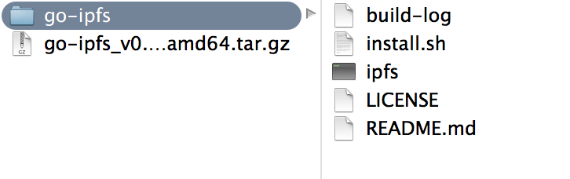
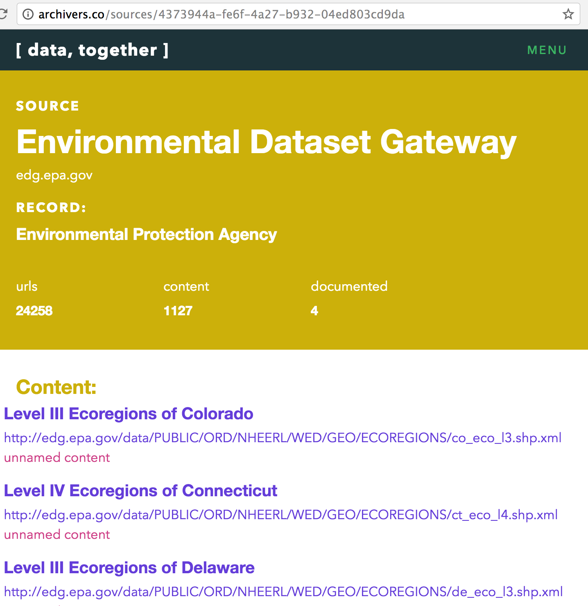
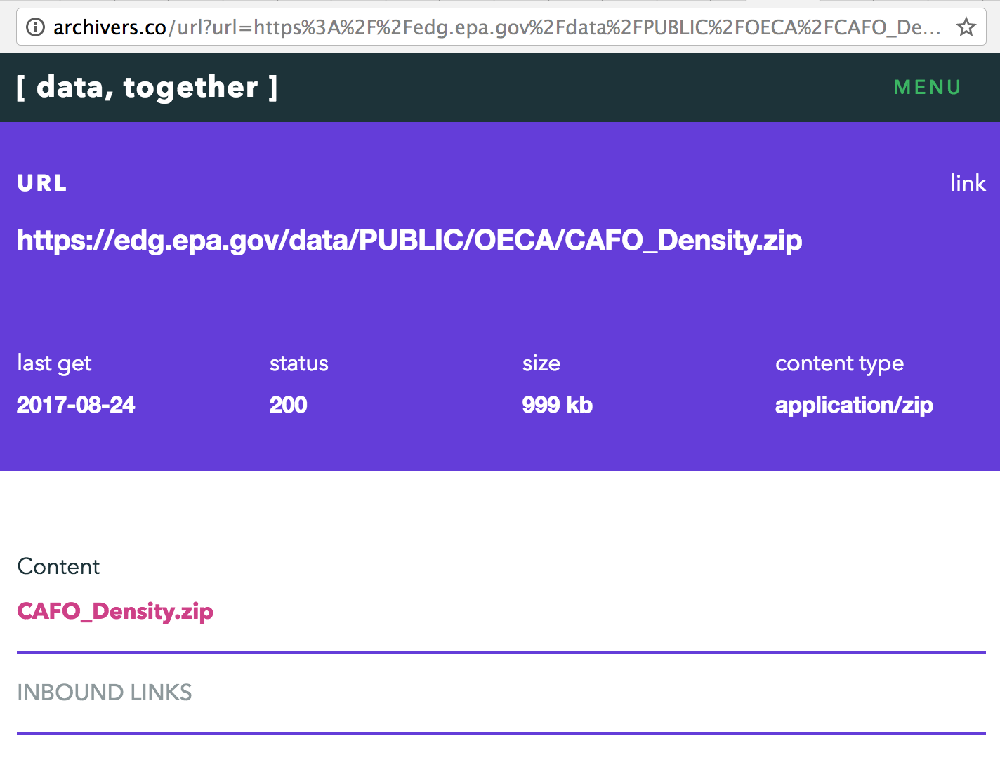
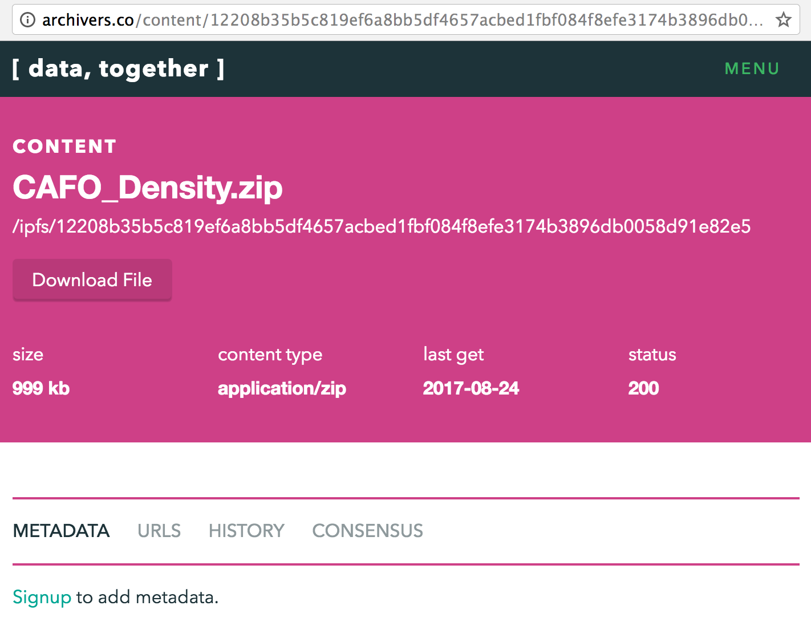
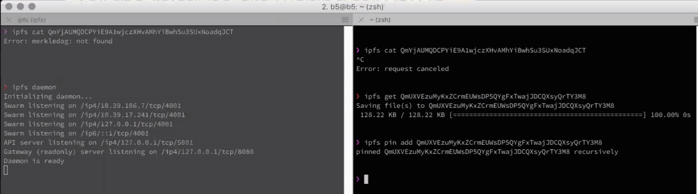

Tutorial: Replicate a Dataset you care about onto hardware that you control
Note: This tutorial is a work in progress. Please add your feedback to datatogether/learning!
Note: this tutorial is written for Mac users, but please follow links into the "decentralized web primer" to find detailed instructions for Windows and Linux installation of ipfs. Thank you!
Prerequisites
- Some familiarity with the command line
- Enthusiasm!
Learning Objectives
After going through this tutorial, you will know how to:
- Install IPFS and check that it's working properly
- Get the hash of the data
- Check that you have enough storage space on your local machine
- Pin the data in IPFS on your machine
Step 1. Install IPFS and check that it's working properly
- Visit the IPFS installation page at https://ipfs.io/docs/install/
- Scroll down to locate and download the prebuilt
ipfsbinaries for your operating system- On Mac computers, click the big blue button shown in the screenshot below:

- Download and unzip

Open Terminal, navigate into your unzipped go-ipfs folder, and type
sudo ./install.sh- This will install
ipfs - If you have any difficulties and/or to learn the exact installation steps for each operating system, visit this page: https://github.com/flyingzumwalt/decentralized-web-primer/blob/master/install-ipfs/lessons/download-and-install.md
- This will install
In terminal, type
ipfs init- This will initialize your IPFS repository, or, in other words:
- This will generate a local IPFS repository for the current user account on your machine. It also generates a cryptographic keypair that allows your ipfs node to cryptographically sign the content and messages that you create.
- Your terminal should print something similar to:
- This will initialize your IPFS repository, or, in other words:
$ ipfs init
initializing ipfs node at /Users/jbenet/.go-ipfs
generating 2048-bit RSA keypair...done
peer identity: Qmcpo2iLBikrdf1d6QU6vXuNb6P7hwrbNPW9kLAH8eG67z
to get started, enter:
ipfs cat /ipfs/QmYwAPJzv5CZsnA625s3Xf2nemtYgPpHdWEz79ojWnPbdG/readme
- If you have any difficulties and/or to learn the exact initialization steps for each operating system: https://github.com/flyingzumwalt/decentralized-web-primer/blob/master/install-ipfs/lessons/initialize-repository.md
- Take the hint from the response you just received, and type
$ ipfs cat /ipfs/QmYwAPJzv5CZsnA625s3Xf2nemtYgPpHdWEz79ojWnPbdG/readme- This
ipfs catcommand tells IPFS to read the content matching the path you provided. If the content isn't available locally,ipfswill attempt to find it on the peer-to-peer network. - Your terminal should print something similar to
- This
Hello and Welcome to IPFS!
██╗██████╗ ███████╗███████╗
██║██╔══██╗██╔════╝██╔════╝
██║██████╔╝█████╗ ███████╗
██║██╔═══╝ ██╔══╝ ╚════██║
██║██║ ██║ ███████║
╚═╝╚═╝ ╚═╝ ╚══════╝
If you're seeing this, you have successfully installed
IPFS and are now interfacing with the ipfs merkledag!
-------------------------------------------------------
| Warning: |
| This is alpha software. use at your own discretion! |
| Much is missing or lacking polish. There are bugs. |
| Not yet secure. Read the security notes for more. |
-------------------------------------------------------
Check out some of the other files in this directory:
./about
./help
./quick-start <-- usage examples
./readme <-- this file
./security-notes
- You are good to go at this point, but perhaps you might like to explore a bit more to get used to IPFS
Step 2. Start your local ipfs node
- Open one terminal window to start IPFS on your local machine.
- This is your node on IPFS: it is running on your local machine, connecting you to the distributed web, allowing you to add and remove content, and broadcast those actions to the distributed web.
- In terminal, type
ipfs daemon - Allow the
ipfsprocess to keep running by leaving this window open.
Step 3. Check the amount of space available on your hard drive
- On a Mac, use Disc Utility to check how much room your harddrive has.
- Remember this amount for use in the next step!
Step 3. Browse to a dataset online, check its size, and get its hash
- Notice that several government agencies are offered as categories. Click into one of the categories. Shown below is EPA (which you can also reach via this direct link)
- Notice the options on this page, which currently are: "EPA Open Data" "Environmental Dataset Gateway" "epa.gov" "Hazardous Air Pollutants
- Click on an option, also known as a source. Shown below is the Environmental Dataset Gateway:

- Scroll to find a dataset you are interested in, or use this example of CAFO (confined animal feed operation) geodata shown in the screenshot below (direct link)
- Click on the CAFO link to arrive on the URL listing page. Notice the original URL is listed at the top "http://edg.epa.gov/data/PUBLIC/OECA/CAFO_Density.zip":

Note the size, (in this case 999kb) and compare with the amount of room available on your hard drive -- ask yourself, will it fit? If so, proceed!
Look under the "Content" heading to see the name of the actual file that's located at that URL -- click the file name, in this case as shown in the above screenshot, the name is
CAFO_Density.zipwhich will take you to the content page, shown below:

- Copy the long hash that begins with
/ipfs/- Notice that the hash is the same on the page as in the URL
- In this example, it is
/ipfs/QmQU7RoBd8FWAkbePif7Xw5cjoL1Wb6wxCefdTuoA7XGa7 - FYI: the long string of numbers and letters is a base-58 encoded hash. When the
/ipfs/is included at front, it is referred to as the “path”
Step 4. Pin the data onto your machine
- Return to your Terminal window.
In a 2nd terminal window (leave the daemon running in the first window), type
ipfs get X, whereXis the hashIn this example, type this:
ipfs get QmQU7RoBd8FWAkbePif7Xw5cjoL1Wb6wxCefdTuoA7XGa7- the response should be "saving files to X"
Next type,
ipfs pin add XIn this example, type this:
ipfs pin add QmQU7RoBd8FWAkbePif7Xw5cjoL1Wb6wxCefdTuoA7XGa7- The response should be "pinned QmQU7RoBd8FWAkbePif7Xw5cjoL1Wb6wxCefdTuoA7XGa7 recursively"

Next Steps
Move to the next tutorial on how to:
- Add metadata to datasets that have been backed up